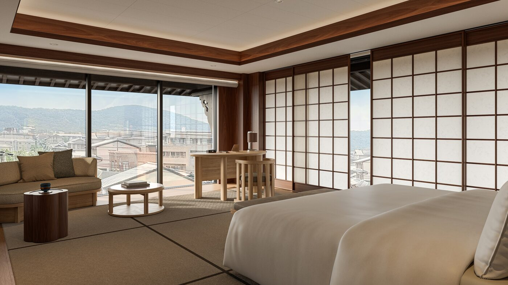

In Miyagawa-cho, one of Kyoto’s five hanamachi — the historic geisha districts where wooden lattice screens still filter the afternoon light and the sound of a shamisen drifts from behind closed doors — Capella Hotels & Resorts has opened its first property in Japan: a building that aspires to be not merely a hotel but a translation, rendering the grammar of the traditional machiya townhouse into the language of contemporary luxury.
The property, which welcomed its first guests on 22 March 2026, occupies a site of extraordinary sensitivity. Miyagawa-cho sits between the Kamo River and the grounds of Kenninji, Kyoto’s oldest Zen temple, founded in 1202. To the east rises Yasaka Pagoda, the five-storey silhouette that has served as the visual shorthand for Higashiyama for centuries. To build a new hotel here — to insert a contemporary hospitality concept into streets where the rhythm of daily life has remained largely unchanged for generations — required an architect capable of thinking in the register of the place itself. Capella chose Kengo Kuma.
It was, by any measure, an inspired appointment. Kuma, whose practice has spent the better part of three decades exploring the relationship between architecture and natural materials, between modernity and the deep structures of Japanese spatial tradition, is perhaps the only living architect who could have navigated the contradictions inherent in this brief. The result is a building that does not announce itself. From the street, it reads as a series of volumes that echo the scale and proportions of the surrounding machiya — the low eaves, the timber screens, the sense of depth receding from the public face into private interior worlds. It is only once you step inside that the contemporary ambition reveals itself: in the play of light through slatted cedar, in the precise geometry of stone and water, in the way the building opens, layer by layer, into gardens and courtyards that seem to exist outside time.
Eighty-nine rooms, six onsen
The hotel comprises eighty-nine rooms and suites, each designed in collaboration with Brewin Design Office to extend the architectural language of the public spaces into the private realm. The palette is restrained — pale timber, undyed linen, stone in shades of charcoal and warm grey — and the furnishings have a deliberate quietness that allows the architecture to speak. There are no grand gestures, no statement pieces competing for attention. Instead, there is the quality of the light, the weight of the door handle, the way the bath is positioned to frame a view of moss-covered stone. It is the kind of design that rewards slowness, that reveals its intelligence gradually, over the course of a stay rather than in the first five minutes.
The most coveted rooms are the six Onsen Suites, each equipped with a private hot-spring bath fed by natural thermal water. The onsen tradition in Japan is ancient, ritualistic, deeply bound up with ideas of purification and renewal, and to offer it within the privacy of a hotel suite is to walk a fine line between accessibility and appropriation. Capella navigates this carefully. The baths are not spa features but architectural events — sunken into stone, screened by timber, oriented toward private gardens planted with Japanese maple and moss. They are designed to be used in the traditional way, with the slow, deliberate choreography of washing and soaking that the onsen demands. There is also a Capella Suite at the top of the property, from which the Yasaka Pagoda appears framed in the window like something from a Hiroshige woodblock print.
The machiya teaches us that luxury is not size but depth — not how much space you occupy, but how many layers of meaning you can fold into the space you have.
Kengo KumaDining, too, has been conceived as an extension of the hotel’s philosophical commitment to place. The headline restaurant is SoNoMa, a collaboration with SingleThread, the Three-Michelin-starred restaurant in Healdsburg, California, founded by Kyle and Katina Connaughton. The Kyoto outpost is led by chef Keita Tominaga, who brings a deep knowledge of Kyoto’s culinary traditions — the kaiseki progression, the reverence for seasonality, the understanding that a meal is a narrative with a beginning, middle and end — to a menu that also draws on SingleThread’s farm-driven philosophy. The ingredients are hyper-local: vegetables from farms in the Kyoto prefecture, fish from the Sea of Japan, tofu from producers who have been perfecting their craft for generations. It is ambitious without being showy, precise without being clinical — a restaurant that feels inevitable in this setting.
The architecture of stillness

Photography courtesy of Capella Hotels & Resorts
Below the guest rooms, the Auriga Spa occupies a series of subterranean chambers that feel closer to a temple than a wellness facility. Private onsen rooms are available for guests who are not staying in the Onsen Suites, and the treatment menu draws on both Japanese and Southeast Asian healing traditions — a reflection of Capella’s Singaporean heritage. The design, again by Kuma and Brewin, uses water, stone and diffused light to create an atmosphere of profound quiet. It is the kind of spa where you find yourself speaking in whispers not because you are told to but because the architecture makes any other register feel inappropriate.
What makes Capella Kyoto significant, beyond the considerable pleasures of its rooms and its restaurant and its baths, is its approach to the question that haunts every luxury hotel built in a historic city: how do you honour the place without embalming it? Too many hotels in Kyoto — and there are now a great many of them, the city having experienced a hotel-building boom in the years before and after the pandemic — treat Japanese tradition as a decorative overlay, a set of signifiers to be deployed for atmosphere. A bamboo screen here, a rock garden there, a tea ceremony offered as an “experience” to guests who will photograph it and move on. Capella, guided by Kuma’s architecture and by a management philosophy that prizes cultural intelligence over cultural tourism, has attempted something more difficult: to build a hotel that participates in the life of the neighbourhood rather than merely observing it.
The location in Miyagawa-cho is central to this ambition. Unlike the more touristic districts of Gion or Higashiyama, Miyagawa-cho remains a working hanamachi, a place where geiko and maiko still train and perform, where the ochaya teahouses still operate according to traditions that predate the Meiji Restoration. To open a hotel here is to accept a responsibility to the community — to ensure that the presence of international guests enriches rather than erodes the fabric of daily life. It is too early to say whether Capella will succeed in this, but the intention is legible in every aspect of the design: in the modest street presence, in the use of local materials and local craftspeople, in the decision to orient the building inward, toward its own gardens, rather than outward, toward the spectacle of the street.
A five-minute walk along the river brings you to Kenninji, where eight centuries of Zen practice have left an atmosphere so concentrated it seems to alter the quality of the air. It is a good place to end a day that began in the timber-scented quiet of an Onsen Suite, that moved through a lunch of extraordinary precision and delicacy, that included an hour in the subterranean stillness of the Auriga Spa. Capella Kyoto is not the most expensive hotel in the city, nor the largest, nor the most ostentatious. It is, however, the one that seems most genuinely interested in the question of what it means to be a guest — not in the hospitality sense of the word, but in the deeper, older sense: someone welcomed into a place, entrusted with its rhythms, asked to be present rather than merely to consume.